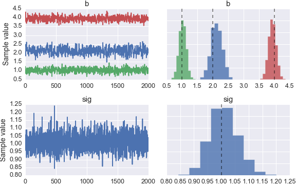

Tutorial¶
Defining a model¶
Here I’ll demonstrate how to use Sampyl with a simple linear model. First, I will create some fake data. Then, I will build a model and sample from the posterior distribution to estimate the coefficients from the synthetic data.
With a linear model, we assume the data is drawn from a normal distribution
where \(\beta_n\) are coefficients we want to estimate and \(x_n\) are the predictor variables in our data.
Let’s start by making some fake data.
# Number of data points
N = 200
# True parameters
sigma = 1
true_b = np.array([2, 1, 4])
# Features, including a constant
X = np.ones((N, len(true_b)))
X[:,1:] = np.random.rand(N, len(true_b)-1)
# Outcomes
y = np.dot(X, true_b) + np.random.randn(N)*sigma
Above I’ve plotted the data we generated. We have the outcomes y and our features X, now we want to build a model to estimate the coefficients from this data. We can start with Bayes theorem
The left hand side \(P(\beta, \sigma \mid D)\) is the posterior distribution. This is a probability distribution of likely values for \(\beta\) and \(\sigma\), given our data \(D\). On the right side is the data likelihood \(P(D \mid \beta, \sigma)\) which gives the probability that we would see our data, given the parameters \(\beta\) and \(\sigma\). Finally, we have our priors, \(P(\beta)\) and \(P(\sigma)\). These distributions represent our prior information about the parameters.
Bayes theorem is quite intuitive because it is very similar to how humans think naturally. Suppose you are on a road trip, and you know its roughly an hour until you arrive, but its been a while since you saw the last sign with the distance so you aren’t too sure. Then, you do see a sign and it says you still have 65 miles (104 km). Now you have a pretty good idea that it’ll be another hour, but you aren’t completely certain because traffic might be slow, or it could take a bit once you get into the city. This is how Bayes theorem works too. You have some prior information about your arrival time, but you’re fairly uncertain. Then, you see some data, the distance remaining, and you update your information about the arrival time.
Continuing on with the model, we want the likelihood, \(P(D \mid \beta, \sigma)\), to model our data. We are assuming we can predict the data with a linear sum of coefficients \(\beta_n\) with our predictors \(x_n\), with some normally distributed noise on the scale of \(\sigma\). So our likelihood would be well modeled with a normal distribution.
We also want to assign probability distributions to \(\beta\) and \(\sigma\) to account for our uncertainty in those parameters and our prior information about them. This is done through the priors \(P(\beta)\, P(\sigma)\). For \(\sigma\), we must choose a distribution that is defined only above 0. An exponential is good for this and we can control the diffuseness of the prior by changing the rate parameter. High rates pull the prior closer to 0, while lower rates push it out. We are using fairly wide normal priors for the coefficients \(\beta\), since we aren’t sure a priori how large the coefficients will be. Putting this all together, we get our model
Every sampler implemented in Sampyl takes a function that calculates \(\log{P(\theta)}\) of the sampling distribution. We want to sample from the model posterior, so we need to write a Python function that calculates \(\log{P(\beta, \sigma \mid D)}\). I’ll build the full model then go through it with explanations.
import sampyl as smp
from sampyl import np
# Here, b is a length 3 array of coefficients
def logp(b, sig):
model = smp.Model()
# Predicted value
y_hat = np.dot(X, b)
# Log-likelihood
model.add(smp.normal(y, mu=y_hat, sig=sig))
# log-priors
model.add(smp.exponential(sig),
smp.normal(b, mu=0, sig=100))
return model()
First, look at the imports, particularly from sampyl import np. If you have worked with Numpy, you know it is usually abbreviated as np, but why have we imported it from Sampyl here? Some of the samplers we have implemented require the gradient of \(\log{P(\theta)}\). To make things simpler, we use a wonderful package autograd to automatically calculate gradients. To use autograd, our \(\log{P(\theta)}\) function needs to be written with Numpy provided by autograd. So, Sampyl imports Numpy from autograd, which you then import from Sampyl to build the model.
Next, check out the function definition. We named it logp but this can be anything. The arguments b and sig are the parameters of the model. They can either be Numpy arrays or scalars such as integers or floats.
Then, we create a model with model = smp.Model(). This is a convenience class that makes defining a model more concise. You add log-probabilities of the priors and likelihood with model.add(). Then, you can call model() to sum up all the log-probabilities and get the log-posterior (well, something proportional to the posterior).
Onwards:
y_hat = np.dot(X, b)
Here our function has been passed b which is an length 3 numpy array, a vector. We want to make a prediction of the outcome, y_hat, then use this as the mean of our likelihood.
model.add(smp.normal(y, mu=y_hat, sig=sig))
This is the log-likelihood of our data, given our parameters, \(P(D \mid \beta, \sigma)\). It is important to note that smp.normal(y, mu=y_hat, sig=sig) returns a number, the log-likelihood of a normal distribution with the passed parameters. There is nothing going on behind the scene, just a function that returns a number. Then,
model.add(smp.exponential(sig, rate=1),
smp.normal(b, mu=0, sig=10)
Here we have defined our priors. Again, smp.exponential and smp.normal return a scalar value of the distribution log-likelihood.
Finally
return model()
As I noted earlier, the distribution functions return log-likelihoods, just numbers. Since we are calculating \(\log{P(\beta, \sigma \mid D)}\),
we just add up the log-likelihoods! The model object does this for us. Again, nothing fancy going on here, just beautiful math with logarithms. Now that we have defined \(\log{P(\beta, \sigma \mid D)}\), we can draw samples from it using one of our samplers.
Sampling from the posterior¶
Each sampler provided by Sampyl requires a \(\log{P(X)}\) function, logp here, and a starting state. A good place to start is the maximum of the posterior, typically called the maximum a posteriori or MAP. You can also define start yourself, it just needs to be a dictionary where the keys are the arguments of logp. Here we’ll use the No-U-Turn Sampler (NUTS)
start = smp.find_MAP(logp, {'b': np.ones(3), 'sig': 1.})
nuts = smp.NUTS(logp, start)
chain = nuts.sample(2100, burn=100)
So first, we find the MAP and pass it as a start value to the NUTS sampler. This returns the sampler object itself nuts. It is important to provide the correct size arguments as starting values. Our function logp expects b to be a length 3 Numpy array, so that is what we need to provide to find_MAP or NUTS.
Calling nuts.sample(2100, burn=100) returns a chain of 2000 samples from the posterior distribution, where we have discarded the first 100 as a burn-in period. The chain we get is a Numpy record array so that we can access the posterior distribution for each parameter by name. For instance, to get the posterior samples for b with chain.b
import matplotlib.pyplot as plt
plt.plot(chain.b)

Below is a plot of the posterior samples for each parameter.
I’ve also included dashed lines indicating the true parameters. In the future, we will be providing functionality to return various statistics and intervals for the posterior. For more guidance, please look through the other examples provided in the documentation.